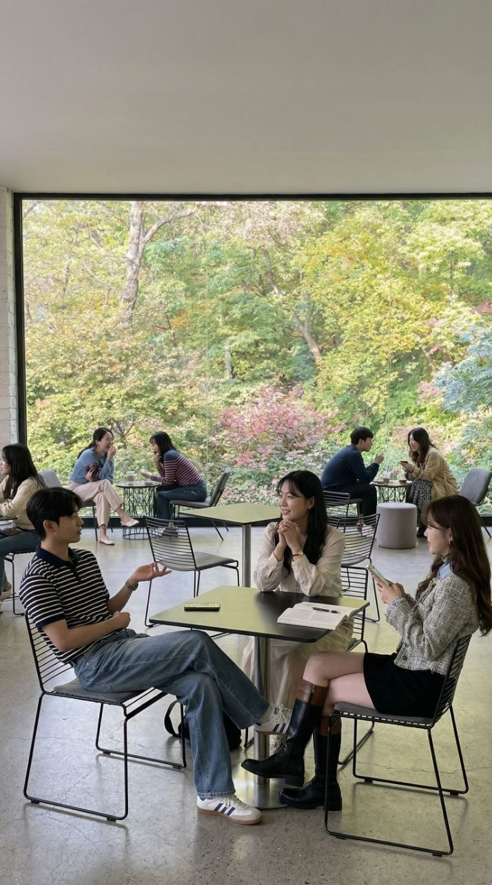
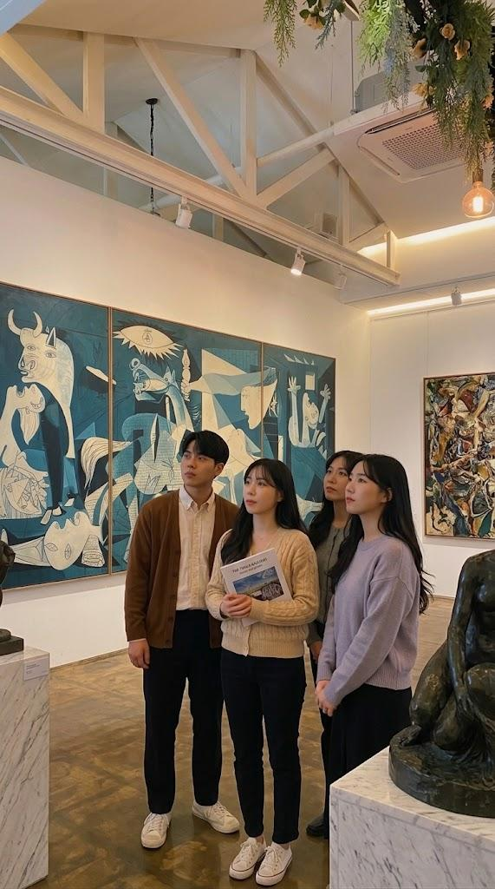
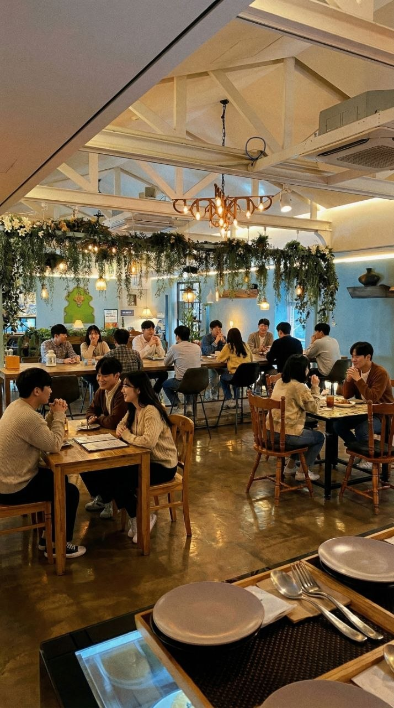

위드✦
디지털 세상에서 벗어나,
진짜 세상에서 즐거움 찾기
3초 만에 가입하기
디지털 세상에서 벗어나,
진짜 세상에서 즐거움 찾기





평소 가장 좋아하는 공간이나 풍경은?
지훈: "퇴근 후 한강 산책로요. 노을 지는 시간에 걸으면..."
서연: "동네 단골 카페 창가 자리요. 비 오는 날 거기 앉아..."
김O주 (서울 거주, 28살, ENTP, 웹디자이너)
"단순히 영화만 보는 게 아니라, 끝나고 카페에서 취미가 맞는 분들과 작품의 숨은 의미를 나누는 시간이 너무 좋았어요. 혼자라면 절대 몰랐을 시선을 알게 된 기분이에요!"
이O훈 (광주 거주, 31살, INFJ, 공무원)
"매일 똑같은 일상이었는데, 위드를 통해 새로운 사람들과 한 권의 책으로 깊이 있는 대화를 나눴어요. 나와 다른 가치관을 가진 사람들의 이야기를 들으며 위로받았습니다."
박O서 (부산 거주, 26살, ENFP, 프리랜서)
"전시는 보통 혼자 가거나 친한 친구하고만 갔는데, 위드에서 만난 분들과 함께 가니 견문이 확 넓어지더라고요! 작품을 보는 각기 다른 시각을 공유하는 게 이렇게 즐거울 줄 몰랐어요."
모든 멤버는 인터뷰를 거쳐
직접 대화를 나눠본 사람들이에요
"저는 눈에 보이지 않는 미세한 회로를 설계하며 하루를 보냅니다. 일할 때는 지극히 논리적이지만, 퇴근 후에는 영화 속 인물의 감정을 공유하며 마음의 온기를 채우는 걸 좋아해요. 무례하거나 배려 없는 태도는 지양하지만, 자신만의 뚜렷한 주관을 가지고 토론하는 분들과는 금방 깊은 유대감을 느낍니다. 저와 함께 영화 한 편, 그리고 그 뒤에 숨겨진 철학적인 대화를 나눠보실 분 계신가요?"
"매일 꼼꼼하게 숫자를 다루는 금융권에서 치열하게 지내고 있어요. 그래서인지 주말만큼은 조용한 전시회장을 거닐며 정적인 여유를 찾는 시간이 제게는 소중합니다. 처음엔 조금 낯을 가릴 수 있지만, 가벼운 수다보다 깊이 있는 대화를 즐기는 스타일이에요. 성숙한 대화가 통하는 분들과 함께 가치관을 공유할 때 가장 큰 에너지를 얻곤 해요. 요즘은 저의 일상을 풍요롭게 해줄 새로운 취미를 찾고 있는데, 위드에서 함께 시작해보고 싶어요."
한 명도 빠짐없이 사람이 직접 통화 or 대면으로 멤버의 가치관, 성격, 취미, 관심사를 알아가요.
1개월 멤버십
정규 모임 2회
5%↓
34,000원
2개월 멤버십
정규 모임 4회
10%↓
64,600원
3개월 멤버십
정규 모임 6회
15%↓
86,700원
Q. 모임 날짜나 장소는 어떻게 되나요?
A. 서울에서 시작한 모임이지만, 현재 이용자가 많아 광주, 부산, 대구 등 전국 주요 핵심 도시로 지역을 확장했습니다. 이용자들의 주소지를 기반으로 반경 50km 이내에 있는 멤버들끼리 매칭해 최적의 장소를 안내해 드립니다.
Q. 이상한 사람이 들어오면 어떡하죠?
A. 위드는 모든 멤버를 대상으로 1:1 심층 인터뷰를 진행합니다. 이 과정을 통해 가치관과 목적을 명확히 확인하여 부적절한 인원은 원천 필터링하니 안심하셔도 됩니다.
Q. 모임 인원은 몇 명 정도로 구성되나요?
A. 가용 인원 중 3~5명 정도의 소규모로 구성됩니다. 너무 번잡하지 않게 서로에게 집중하며 소소하게 대화를 나눌 수 있는 최적의 인원으로 매칭해 드립니다.
Q. 20대 초반도 신청 가능한가요?
A. 네, 당연히 신청 가능합니다. 위드는 나이보다 가치관과 대화의 결을 중요하게 생각하며, 실제로 20대 초반 회원들도 꽤 많이 활동하고 계시니 부담 없이 지원해 주세요.
위드는 건강한 소통을 지향하며, 이성 목적의 만남을 원천 차단합니다.
위드(WITH) 담당자가 확인 후
빠르게 대화의 문을 두드릴게요.